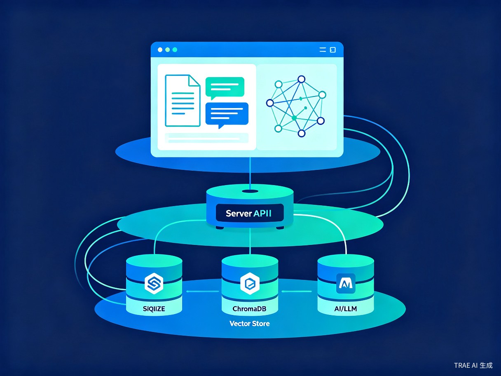
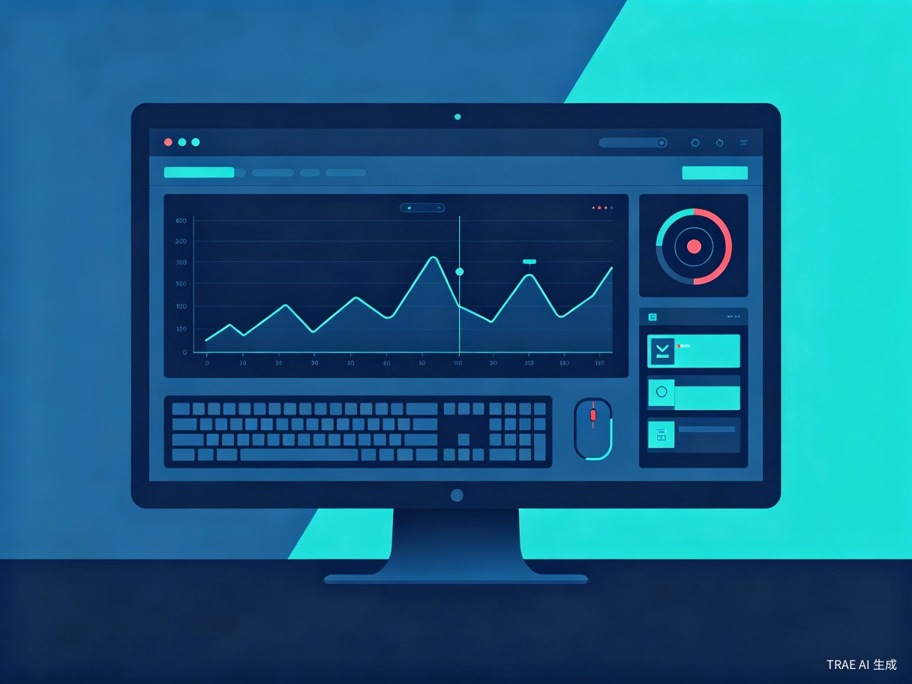
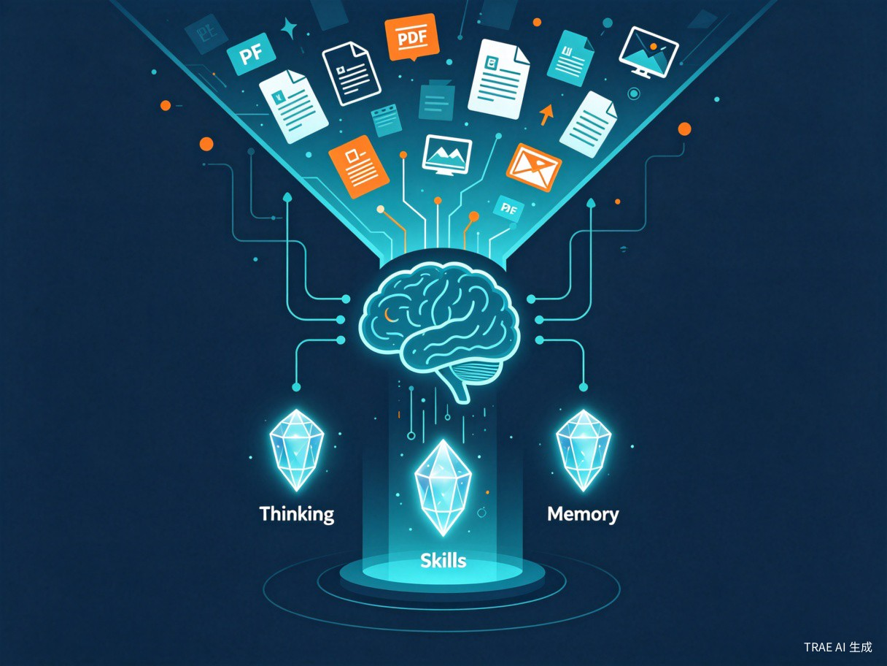

Mneme 个人知识库系统
基于 RAG 技术的本地智能知识管理平台，让个人知识真正可检索、可理解、可迁移
创意介绍
发现的问题
个人知识分散在各类文档、笔记、视频和图片中，缺乏统一管理和智能检索手段，导致知识利用率极低，已有的经验无法有效复用。传统笔记工具只解决"存储"问题，不解决"理解和复用"问题。
创意动机
在日常学习和工作中，我们积累了大量文档和资料，但真正需要用到某条知识时，往往翻找半天也找不到。受RAG（检索增强生成）技术的启发，我希望打造一个能真正"读懂"个人知识库的本地智能助手，让知识管理从"存档"进化到"对话"。
产品形态
一套本地部署的 Web 系统，支持多格式文档/视频/图片上传管理、基于知识库的智能问答、文件关联图谱可视化、实时行为监控（在用户授权下追踪电脑操作轨迹），以及个人知识蒸馏生成可迁移的 Skill 文件。数据完全本地化，隐私安全可控。
核心功能
多格式文档管理
支持 PDF、Word、TXT、Markdown 文档，以及 MP4、AVI、MOV 等主流视频格式和 JPG、PNG、GIF 等图片格式的统一上传与管理，支持自定义命名和向量化状态追踪。
RAG 智能问答
基于知识库内容进行自然语言问答，回答自动引用文档来源，支持多轮对话和对话历史记录，让知识检索变成自然对话。
双模知识检索
同时支持全文关键词搜索和基于向量相似度的语义检索，搜索结果高亮匹配内容，媒体文件支持预览和下载。
知识图谱可视化
支持文件间建立关联关系，通过力导向图谱展示所有文件和关联，支持缩放、拖拽、节点详情查看，不同文件类型以颜色区分。
个人知识蒸馏
自动分析文档内容，从思维方式、技术能力、知识记忆三个维度蒸馏个人知识，生成可迁移的 Skill 文件，导出给 Cursor、Copilot 等 AI 工具使用。
实时行为监控
在用户授权下，实时监控电脑操作行为（键盘输入、鼠标点击、应用切换、窗口焦点等），自动记录工作轨迹，为知识库补充"做了什么"的上下文维度。
隐私安全可控
所有数据完全本地存储，不依赖任何云端服务。基于 Ollama 本地运行大语言模型，无需网络即可使用全部功能。
目标用户与痛点
核心用户群体
- 知识工作者 — 需要系统性管理个人知识资产，频繁进行知识检索和复用的专业人士
- 学生与研究者 — 积累大量论文、笔记、课程资料，需要高效整理和快速查找
- 开发者 — 拥有丰富的技术文档和项目经验，希望沉淀个人技术栈和最佳实践
- 隐私敏感用户 — 不愿将个人数据上传云端，需要完全本地化的知识管理方案
使用场景
- 撰写报告时需要回忆某份旧文档的核心观点 — 直接向知识库提问即可获得带引用的回答
- 准备技术分享时需要快速梳理过往项目经验 — 通过图谱查看文件关联，通过问答提取关键信息
- 切换工作环境时希望带走"思维模式"和"技术偏好" — 导出 Skill 文件，在新环境中导入 Cursor/Copilot
- 整理学习资料时需要将视频、图片、文档统一管理 — 一站式上传、分类、关联和检索
- 回顾一天工作时想知道"刚才做了什么" — 行为监控自动记录操作轨迹，生成时间线，帮助复盘工作流
当前痛点
知识碎片化严重，分散在本地文件夹、云盘、聊天记录等各处，检索全靠记忆；遇到问题只能重新搜索，已有的经验教训无法自动关联和提醒；个人独特的思维方式和最佳实践无法沉淀和迁移到新工具中。
系统架构

技术选型
| 层级 | 技术 | 选型理由 |
|---|---|---|
| 前端框架 | React 18 + TypeScript |
生态成熟，类型安全，组件库丰富 |
| UI 组件库 | Ant Design 5 |
企业级组件，美观易用 |
| 状态管理 | Zustand |
轻量高效，API 简洁 |
| 图谱可视化 | React Flow |
成熟的图谱渲染库，交互丰富 |
| 后端框架 | FastAPI |
高性能异步框架，自动生成 API 文档 |
| 元数据存储 | SQLite |
轻量嵌入式，无需额外服务 |
| 向量数据库 | ChromaDB |
嵌入式向量存储，与 RAG 完美集成 |
| RAG 框架 | LangChain |
成熟的 RAG 工具链，文档处理能力强 |
| 本地大模型 | Ollama |
一键部署本地 LLM，支持 CPU 运行 |
| 部署方式 | Docker Compose |
本地一键部署，环境隔离 |
实时行为监控
这是 Mneme 的独特创新点。系统不仅管理"静态文档"，更通过在用户授权下实时监控电脑操作行为，捕捉"动态工作流"，让知识库具备完整的上下文维度。

监控维度
键盘与鼠标
记录键盘输入频率、鼠标点击位置与移动轨迹，分析用户在不同应用中的交互模式。
应用与窗口
追踪应用启动、窗口切换、标签页跳转，自动关联当前操作与知识库中的相关文档。
时间线复盘
自动生成操作时间线，支持按时间段回溯"做了什么"，帮助用户复盘工作流和知识使用习惯。
隐私与权限
- 完全用户授权 — 监控功能默认关闭，需用户主动开启并设置监控范围
- 本地存储 — 所有行为数据仅存储在本地，不上传任何云端
- 敏感信息过滤 — 自动过滤密码输入框、支付页面等敏感场景，不记录隐私内容
- 一键暂停 — 用户可随时暂停或停止监控，完全掌控数据主权
与知识库的联动
行为监控不是独立功能，而是与知识库深度联动：当用户在阅读某份文档时，系统记录该行为并自动建立"行为-文档"关联；当用户搜索时，行为数据作为上下文辅助排序最相关的结果；当生成 Skill 时，行为模式作为工作习惯维度被纳入蒸馏分析。
知识蒸馏与 Skill 生成
这是 Mneme 最具创新性的功能。系统通过分析用户上传的全部文档，自动蒸馏出三个维度的个人知识，生成结构化的 Skill 文件，可导出给第三方 AI 工具使用。

三大蒸馏维度
思维方式
蒸馏用户的决策逻辑、分析框架、工作习惯和沟通风格，让 AI 理解"你怎么思考问题"。
技术能力
提炼擅长技术栈、最佳实践、项目经验和学习方向，让 AI 理解"你擅长做什么"。
知识记忆
归纳核心概念、经验总结、资源积累和个人见解，让 AI 理解"你知道什么"。
生成流程
导出格式
- Markdown 格式 — 阅读友好，适合作为项目文档或系统提示词
- JSON 格式 — 结构化数据，适合程序解析和 API 集成
- 剪贴板复制 — 一键复制内容到剪贴板，快速粘贴使用
价值与意义
⚡ 效率提升
通过语义检索和智能问答，将知识查找时间从"翻找数十分钟"缩短到"提问即答"，大幅提升个人知识复用效率。行为监控自动记录工作轨迹，减少手动整理的时间成本。知识蒸馏功能将个人经验提炼为结构化 Skill 文件，可一键导入 Cursor、Copilot 等 AI 工具，实现个人智慧的数字化迁移。
🌎 社会价值
所有数据完全本地存储，不依赖云端服务，在隐私安全日益受关注的当下，为用户提供一个真正可控的个人知识管理方案。降低对商业平台的依赖风险，推动数据主权回归个人的理念实践。
项目规划
明确不做
- 多用户协作功能（仅单用户）
- 云端同步与实时协作编辑
- 复杂权限管理（仅管理员）
- GPU 加速依赖（支持 CPU 运行）
- 大规模部署支持（仅本地单机）
风险缓解
| 风险 | 缓解方案 |
|---|---|
| 文档向量化耗时较长 | 异步处理 + 进度提示 + 后台任务队列 |
| CPU 环境下模型推理慢 | 提示用户可配置模型量化参数 |
| 大文档内存占用高 | 流式处理 + 分片存储 |
| Ollama 服务未启动 | 启动检查 + 友好错误提示 |
| 图谱节点过多渲染卡顿 | 分页加载、虚拟化、聚类展示 |
| Skill 生成耗时长 | 实时进度展示 + 后台异步处理 |
| 行为监控引发隐私担忧 | 默认关闭 + 用户授权 + 敏感信息过滤 + 一键暂停 |
| 行为数据存储占用大 | 数据压缩 + 自动清理旧数据 + 用户自定义保留策略 |